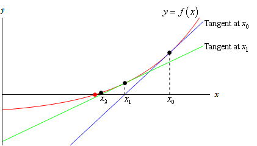
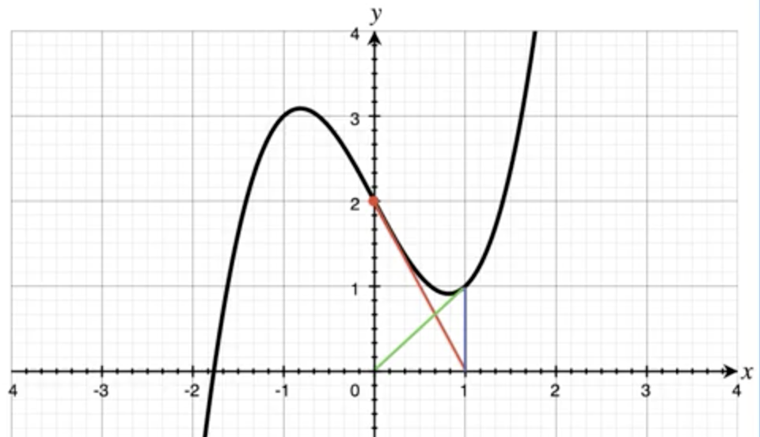
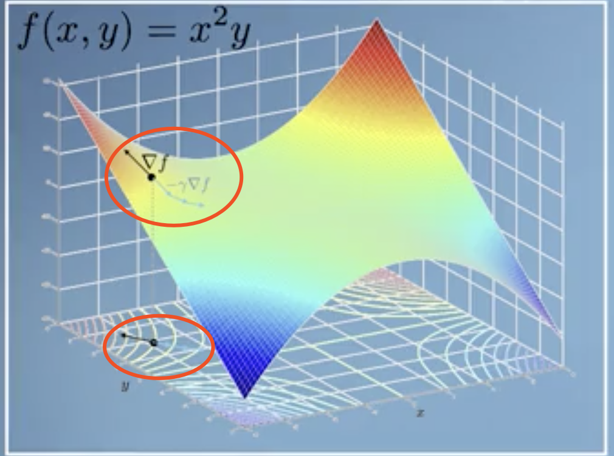
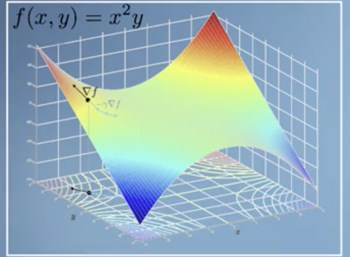
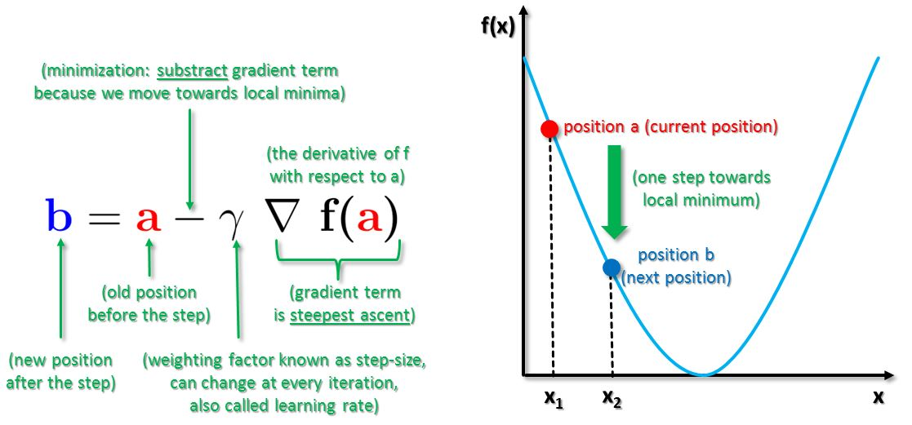
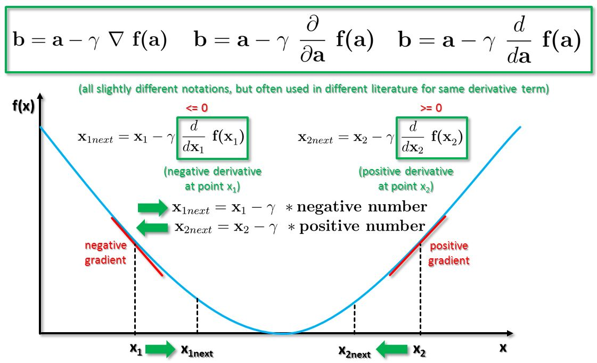
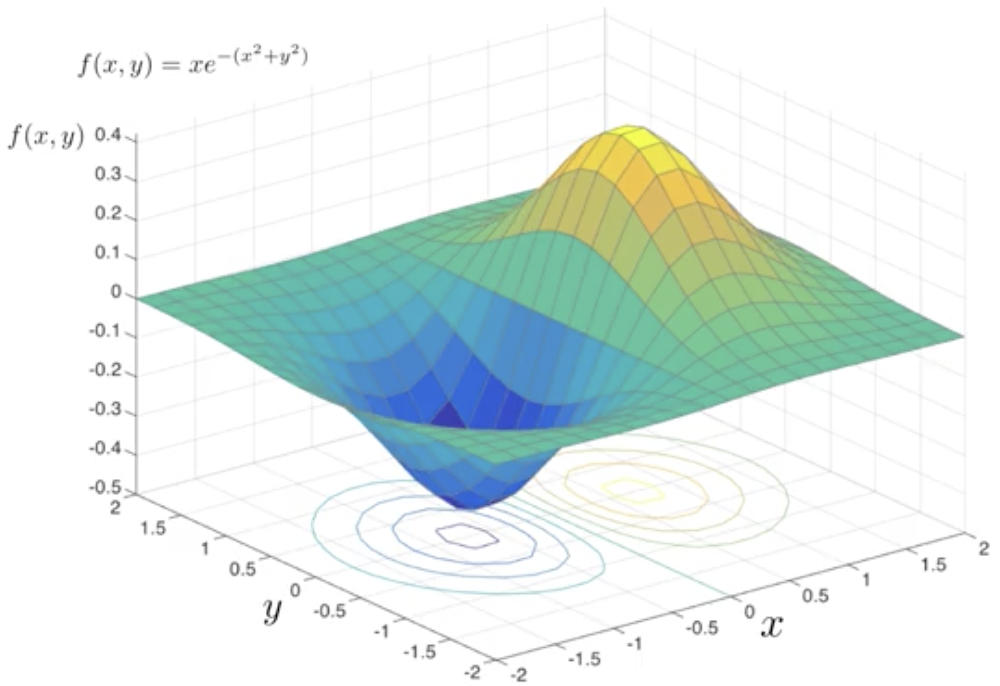
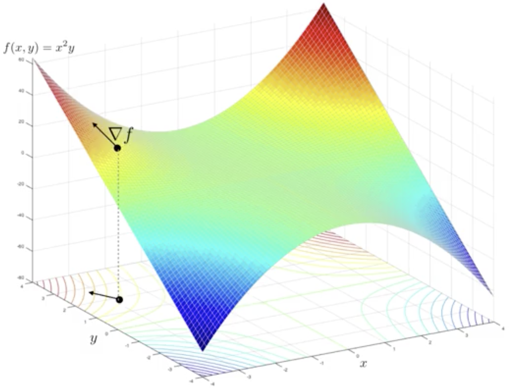
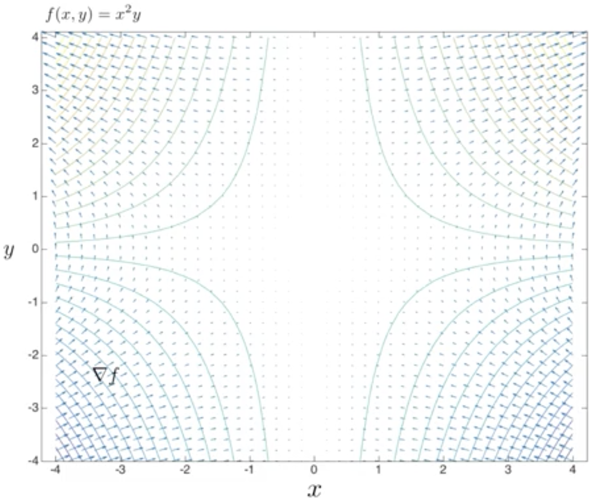
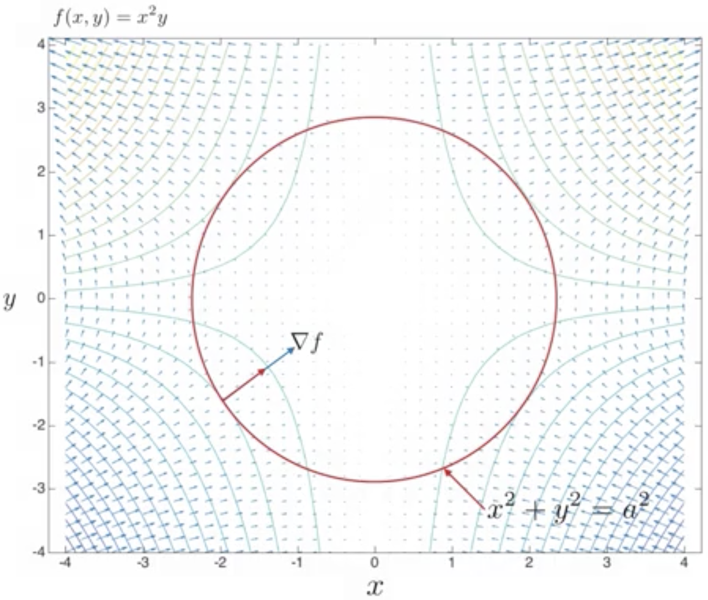

简介
If we want to find the minimum and maximum points of a function then we can use multivariate calculus to do this, say to optimise the parameters (the space) of a function to fit some data. First we’ll do this in one dimension and use the gradient to give us estimates of where the zero points of that function are, and then iterate in the Newton-Raphson method. Then we’ll extend the idea to multiple dimensions by finding the gradient vector, Grad, which is the vector of the Jacobian. This will then let us find our way to the minima and maxima in what is called the gradient descent method. We’ll then take a moment to use Grad to find the minima and maxima along a constraint in the space, which is the Lagrange multipliers method.
学习目标
- 掌握优化的原理
- 用多元微积分实现优化
- 分析一些算法失效的情况–没有返回最优解的情况
- 用拉格朗日乘数法解决受约束的 Gradient Descent问题。
Fitting as Optimization Problem

Optimization 的目的是：Find the specific variables $\mathbf{x} = \begin{bmatrix}x_1\\x_2\\ \vdots\\x_n \end{bmatrix}$ , let $f(\mathbf{x})=f_{min}$ or $f(\mathbf{x})=f_{max}$.
为了描述统一下面只说 minimize function $f$ 的情况，maximize的情况是完全类似的。
Optimization 的过程是：Starting at a specific point $\mathbf{x}_0$, Iteratively update the variable using the following process,
$$
\color{blue}{\mathbf x_{i+1} := \mathbf x_{i} +\Delta \mathbf x} \text{ , where } i=0,1,…,n \\
\color{blue}{f(\mathbf x_n) = f_{min}}
$$
各种优化算法的区别往往在于如何确定 $\color{blue}{\Delta \mathbf{x}}$，比如对下文即将要讲到的两种优化算法而言：
| Optimization Algorithm | $\Delta \mathbf{x}$ | 自变量变化的方向（i.e. $\Delta \mathbf{x}$ 的方向） |
|---|---|---|
| Newton Method | $-\frac{f(x)}{\color{blue}{f^\prime(x)}}$ | 导数的反方向 |
| Gradient Descent | $- \alpha \color{blue}{\nabla_{\mathbf{x}}f}$ | 梯度的反方向 |
可以看出二者对 $\Delta \mathbf{x}$ 的选取是不一样的。
按道理讲，因为$\Delta \mathbf{x}$ 是向量，因此不同的优化算法选取$\Delta \mathbf{x}$ 的这个所谓“不一样” 应该包括：
- 方向不一样
- 大小不一样 （i.e. $\Vert \Delta \mathbf{x}\Vert$ 不一样）
但实际上，我们仔细看上面表格的话会发现：牛顿法和梯度下降法选择的 $\Delta \mathbf{x}$ 仅仅是大小不一样，方向是一样的：都是梯度（导数）的反方向。
这个现象不是偶然的，在下面的内容中会讲到。
Linear Approximation / Newton Method
Newton Method is used to solve the root of function.
问题：存在一个函数 $f(x)$, 已知 $f(x)=0$ 有解，求$x=?$
核心思想：
我们虽然无法直接找到方程的解 $\hat x$, 但是我们可以先选择一个相对“靠谱”的点 $x_0$, 基于$x_0$ 再选择出一个$x_1$, 不断迭代这个过程，最后我们选择的$x_n$ 就与真正的解 $\hat x$ 比较接近了。
“靠谱”的意思是，$f(x_0)$ 的值与 $f(\hat x)$ 差别不要过大，即：$x_0$ 选在 $\hat x$ 附近。
核心思想之下，可以从两个角度来思考牛顿法的原理。
一. 从 Linear Approximation 的角度
我们在某个点 $x=x_0$ 处 linearize 函数 $f(x)$ 的时候，我们可以问一个问题：$x_0$ 附近（a short distance way）的点 $x_0 + \Delta x$ 处的函数值是多少, i.e. $f(x_0 + \Delta x)=?$
根据我们之前学习的知识我们知道，在一个点处linear approximation of function 可以通过一阶 Taylor serise解决：
$$
f(x_0 + \Delta x) \approx f(x_0) + f^\prime(x_0)\Delta x
$$
实际上 linear approximation of function 可以并不依赖于Taylor series 的相关知识，我们可以直接从导数的定义公式推导出来：
$f^\prime(x_0) = \lim_{\Delta x \to 0} \frac{f(x_0 + \Delta x) - f(x_0)}{\Delta x} \Rightarrow$ 即在$x_0$ 附近不远的范围有: $f^\prime(x_0) \approx \frac{f(x_0 + \Delta x) - f(x_0)}{\Delta x} \Rightarrow$
$f(x_0 + \Delta x) \approx f(x_0) + f^\prime(x_0)\Delta x$. 与 Taylor series得出的结论是一致的。
现在，我们选择 $x_0$ 作为我们的初始点。根据牛顿法的思想，如果现在我们假设函数在$x_0$ 点附近有0值，我们可以re-arrange to find how far away, i.e. 我们现在转换一下问题：这个使 $f(x)=0$ 的点$\hat x$ 距离$x_0$ 的距离多远？当然，由于我们采用了first order approximation, 我们最多只能得到真实距离的近似值。
为什么将问题转换为寻找$\hat x$ 距 $x_0$ 的距离呢？这是因为，如果我们能找到这个距离，我们把最初选择的点按照这个距离移动不就更加接近真实的 $\hat x$ 了吗？这个距离不就是
这就得到：$f(x_0 + \Delta x)=0$, 进一步：
$$
\Delta x \approx -\frac{f(x_0)}{f^\prime(x_0)}
$$
这个 “距离的近似值” 我们得到了，我们就可以得到$x_0 +\Delta x$，记为 $x_1$, 这个点就比 $x_0$ 更接近真实的解 $\hat x$ 了。应为是近似距离，只移动一次是不够的，因此我们要迭代地进行上述过程。 迭代次数$n$可以趋于无穷大，因此在下面的公式中就是用等号而不用约等于了，如下：
$$
x_{i+1} = x_i + \Delta x =x_i - \frac{f(x_i)}{f^\prime(x_i)}, i = 0,1,…,n
$$
我们迭代 $n$ 次，当$\vert f(x_n )\vert < \varepsilon$ 的时候（$\varepsilon$ 是最够小的正数），我们就认为 $x_n$ 是 $\hat x$ 的合理近似值。此时，我们称为Newton Methond Converges.
二. 从几何结构

上图中，$x_0$处的蓝色切线与 $x-axis$ 的截距为记为 $x_1$， 夹角为$\theta$. 那么有，根据几何及函数在点处导数的关系可知，
$$
\tan(\theta) = \frac{f(x_0)}{x_1 - x_0} =f^\prime (x_0)
$$
即：
$$
x_1 = x_0 - \frac{f(x_0)}{f^\prime(x_0)}
$$
我们把这个过程迭代$n$ 次，可得
$$
x_{i+1} = x_i - \frac{f(x_i)}{f^\prime(x_i)}
$$
与上面从 Linear Approximation of function 的角度得到的结果是一致的。
此外，Newton Method 虽然和 Linear Approximation of function 有密切关系，但是也有本质区别：
- Approximation 是在自变量已知的情况下，对函数在该点附近做近似。
- Newton Method 刚好反过来，是在函数值已知情况下$f(x) = 0$, 求满足条件的自变量的取值。
Abnormality of Newton Method
一. 拐点附近
我们知道$\Delta x \approx -\frac{f(x)}{f^\prime(x)}$ , 在拐点附近$f^\prime(x)$ 会很小， step 会变得很大，会导致收敛变得比较慢；甚至会导致无法收敛，i.e. diverge
二. 震荡
有些 starting point 会导致Newton Methond 既不收敛同时也不发散，而是震荡。此时，迭代过程是一种会陷入一种死循环。如下图，

*梯度下降算法
$\color{red}{\text{WoW! This is the most promising algorithm in this course.}}$
Gradient descent 核心思想与Newton Method 有点类似：迭代地移动自变量$\mathbf{x} \rightarrow \mathbf{x + \Delta x}$, 使函数值逐渐变小。区别在于：
- 只不过gradient descent 对于Multivariate function 也适用；Newton method 只用于单变量函数。
- Newton method 是知道函数值求解自变量；Gradient descent 并不知道函数的具体取值，而是不断地通过改变自变量来获得更小的函数值。

Gradient
以上图中函数 $f(x,y)=x^2y$ 为例, 函数的梯度定义为如下形式：
$$
\text{Grad}f=\frac{\partial f}{\partial\mathbf{x}}= \nabla_{\mathbf{x}}f = \begin{bmatrix}\frac{ \partial f}{\partial x} \\ \frac{\partial f}{\partial y} \end{bmatrix} = \frac{\partial f}{\partial x}\begin{bmatrix} 1\\0 \end{bmatrix} + \frac{\partial f}{\partial y}\begin{bmatrix}0\\1 \end{bmatrix} =\frac{\partial f}{\partial x}\vec i + \frac{\partial f}{\partial y}\vec j
$$
n 元实值函数的梯度 is a vector with n components. Each component of gradient is a partial derivative of function $f$ with respect to a corresponding variable. In this example, say $x,y$.
Each component of a gradient vector(i.e. Grad) 表示函数沿着那个分量方向的变化速度。
Gradient is a collection of the derivatives of function with repsect to all variables.
Directional derivative
对一个函数, e.g. $f(x,y) = x^2y$, the partial derivative with respect to $ x$ gives the rate of change of f in the $x$ direction, the partial dericate with respect to $y$ gives the rate of change of f in the $y$ direction; Gradient gives a overall indication about the rate of change of $f$.
How do we compute the rate of change of f in arbitrary direction? Defition:
The rate of change of a multivarite function in the direction $\mathbf{u}$ is called the directional derivative in the direction $\mathbf{u}$. Here $\mathbf{u}$ is assumed to be a unit vector. Assuming that:
$$
\begin{align}
f = f(x,y) \\
\mathbf{u}=
\begin{bmatrix}
u_1\\
u_2
\end{bmatrix}
\end{align}
$$
那么，我们有：
$$
\color{blue}{D_{\mathbf{u}}f } = \color{orange}{\nabla_{\mathbf{x}}f } \cdot \color{green}{\mathbf{u}} = \color{orange}{\frac{\partial f}{\partial x}} \color{green}{u_1} + \color{orange}{\frac{\partial f}{\partial y}} \color{green}{u_2}
$$
因此，方向导数是梯度与$\mathbf{u}$ 的点积。
注意： 如果 $\mathbf{u}$ 是$x$轴方向的单位向量，i.e. $\mathbf{u}=\begin{bmatrix}1\\0 \end{bmatrix}$, 那么方向导数就是函数对$x$ 偏导数, i.e. $D_u f = \frac{\partial f}{\partial x}$.
一般情况
一般情况下，the directional derivative is the linear combination of all the partial derivaties.
Example:
$\mathbf{u} = \begin{bmatrix}2\\1 \end{bmatrix}$, $f(x,y) = x^2y$ . 求函数$f$ 在$(2,3)$ 点, 在 $\mathbf{u}$ 方向的导数？
$D_{\mathbf{u}}f = \nabla_{x}f \cdot \mathbf{u} =\begin{bmatrix}12\\4 \end{bmatrix} \cdot \begin{bmatrix}2\\1 \end{bmatrix}=28$.
Directions of Greatest Increase and Decrease
根据前面的知识，我们可以把方向导数可以写成下面的形式，
$D_{\mathbf{u}}f = \nabla_{\mathbf{x}}f \cdot \mathbf{u} = \Vert \nabla_{\mathbf{x}}f \Vert \Vert \mathbf{u} \Vert cos\theta$
$\theta$ 是gradient vector 与方向向量 $\mathbf{u}$ 之间的夹角。
那么我们有如下结论：
- 当 $\theta = 0$ ，方向导数 $D_{\mathbf{u}}$ 取得其最大的正值。Hence, the direction of greatest increase $f$ is the same as the direction of gradient vector.
- 当 $\theta = \pi$ ，方向导数 $D_{\mathbf{u}}$ 取得其最大的负值。Hence, the direction of greatest decrease $f$ is the direction opposite to gradient vector.
Ok, 实际上，以上结论也就是 Gradient descent 算法的思想来源和理论基础。
根据上述结论，我们可以给梯度一个描述性的定义，
梯度是这样一个向量：1. 沿着它的方向函数增加最快；沿着它的反方向函数减小最快。
2. 梯度的size(norm) 表明了函数增加的速率（快慢）。
偏导、梯度和方向导数
对于 n 元实值函数 $f=f(x_1,x_2,…,x_n)$,
| 概念 | 记号 | 含义 | 表示 |
|---|---|---|---|
| Partial derivative | $\frac{\partial f}{\partial x_i}$ | 函数在 $x_i$ 方向的变化速度；绝对值代表变化率，正、负表示方向 | scalar |
| Gradient | $\nabla_{\mathbf{x}}f$ , $\frac{\partial f}{\partial \mathbf{x}}$ | 是所有偏导数集合而成的向量, 因此它包含函数在各个自变量方向的变化速度；而且gradient 的方向是函数增加最快的方向；norm of gradient 表明函数变化速率（大小） | vecotr |
| Directional derivative | $D_u f$ | 函数在 $\mathbf{u}$ 方向的变化速度，绝对值代表变化率，正、负表示方向 | scalar |
梯度下降的过程

前面详细地分析了gradient 的定义、计算机器含义，以及函数值变化与gradient 的关系。
现在的问题是：如果我们需要 minimize 函数$f(\mathbf{x})$, 如何做？
Gradient descent：不断让自变量沿着梯度的反方向update ，那么同时函数值自然不断地减小，最终收敛于一个局部最小值；或者最后停在我们认为满意的地方（达到一定迭代次数）。（当然也可能是全局最小）。
Gradient Descent Process of Minimization:选择一个起始点 $\mathbf x_0$, and compue the gradient of $f(\mathbf x)$ at $\mathbf x_0$: $\nabla_{\mathbf x}f(\mathbf x)|_{\mathbf x_0}$.
For $i=0,.., n$ do:
- $\mathbf x_{i+1}:= \mathbf x_i -\alpha \nabla_{\mathbf x}f(\mathbf x)|_{\mathbf x_i}$
return $\mathbf x_{n+1}$.
Then, $f_{min}=f(\mathbf x_{n+1})$.
遗留的问题
- 初识点如何选取？

- 如何选取 learning rate $\alpha$.
- 过小，收敛太慢
- 过大，有无法收敛的风险
- 更加细致的观察 gradient，Does it really works? 观察如下两幅图，对助于对GD更细节地理解。


这里有一个练习，用来巩固对梯度下降算法的理解，link.
Lagrange Multipliers
之前讲的优化问题没有对自变量做任何约束，因此自变量的取值范围是：整个定义域。但现实中，很多情况下的优化问题是对自变量有约束的条件下，因此需要有方法将约束考虑在内。朗格朗日乘数法就是解决在自变量约束条件下的优化问题。
优化问题只从公式来看不具备几何的直观性，难以从感官上理解优化的过程。Gradient 和 Contour，无论多元函数的优化，亦或是其可视化来讲，都是非常重要的。下面给出两个函数的梯度和等高线，我们从几何上直观地感受一下。
一. $f(x,y)=xe^{-(x^2+y^2)}$


二.$f(x,y)=x^2y$


Constrained Optimization (simple)
General Case:
Exist function $f(\mathbf x)$, s.t. $g(\mathbf x) = c$, where $c$ is constant.
Optimization:
Find the specific $\mathbf {\hat x}$ which make $f(\mathbf {\hat x})=f_{min}$ or $f_{max}$.
Example :
$f(x,y)=x^2y$, s.t. $x^2+y^2=r^2$ where $r>0$ and is constant.
Optimization: Find $(\hat x,\hat y)$ which make $f(\hat x,\hat y)=f_{min}$or $f_{max}$.
分析：
$x^2+y^2=r$ 在x-o-y平面内是一个以原点为圆心，半径为$r$ 的圆。我们记：$g(x,y)=x^2+y^2$, 那个半径为 $r$ 的圆就是 a specific contour of the contours of function $g(x,y)$.
受限优化含义就是函数$f(x,y)$ 上所有的点中，有一部分投影到x-o-y 平面时会落在 $x^2+y^2=r$ 这个圆上。在这部分点中（这就是contrained 的意思），寻找$(\hat x,\hat y)$ 使得函数取得最大或最小值。
用专业的话说，即：When projection onto x-o-y plane of contours of function $f(x,y)$ tangent to the contour of $g(x,y)$ at $(\hat x,\hat y)$, would maximize or minimize the function $f(x,y)$. Where $f(\hat x,\hat y)=f_{max}$ or $f_{min}$.
如下图所示，

根据上面知识，我们已知：
- 两个 contour 相切
- gradient 与contour 垂直
那么我们就能得出结论：
gradient of $f(x,y)$ parallel to gradient of $g(x,y)$, not equal, at least proportional! i.e.:
$$
\color{blue}{\nabla_{\mathbf x}f(\mathbf x) = \lambda \nabla_{\mathbf x}g(\mathbf x)} \\
\text{where } \mathbf x =\begin{bmatrix}x\\y \end{bmatrix} \text{,and }\lambda \in \mathbb R \text{ which is called lagrange multiplier.}
$$
根据上述结论，我们将
- $f(x,y)=x^2y$
- $g(x,y)=x^2+y^2$
- $g(x,y)=r^2$
这些已知条件带入，可得：
$$
\begin{align}
\begin{bmatrix} 2xy \\ x^2 \end{bmatrix}&=\lambda \begin{bmatrix}2x\\ 2y \end{bmatrix} \\
x^2 + y^2 &= r^2
\end{align}
$$
上述公式有三个未知数$x,y,\lambda$, 有三个方程。解方程即得：
$$
\begin{cases}
\hat x = \pm \frac{2}{\sqrt 3}r \\
\hat y = \pm \frac{1}{\sqrt 3}r \\
\lambda = \pm \frac{1}{\sqrt 3}r
\end{cases}\\
\color{purple}{\text{ we don’t care }\lambda \text{ here, } }\\
\color{purple}{\text{becasue we just want to find the proper points or point } (\hat x,\hat y) \text{ to optimize out function }f(x,y).}
$$
因此，我们得到四个点分别为，其中两个会让函数 $f(x,y)$ 取最大值；另外两个点处 $f(x,y)$ 取最小值。
反思
本节课后半部分我们主要分析如何用 Lagrange Multipliers 解决 Constrained optimization 的问题。
那么， Lagrange Multipliers的核心思想是什么呢？
我个人有两种理解方式，
我么找到函数$f(x,y)$ 的梯度: $\nabla_{\mathbf x}f(\mathbf x)$, 也找到constrained function $g(x,y)$ 的梯度 $\nabla_{\mathbf x}g(\mathbf x)$, 根据 两个函数的contour 相切点，是$f(x,y)$最大or最小值点, 因此让：
$$
\nabla_{\mathbf x}f(\mathbf x) = \lambda \nabla_{\mathbf x} g(\mathbf x)
$$
从而求得: $\mathbf {\hat x}$.Lagrange 通过 $\lambda$ 将constrained equation 与 original objective function $f(x,y)$ 结合起来形成一个新的 objective function: $\mathcal L (\mathbf x,\lambda)$. 把它当作 unconstrained function 去优化它:
$$
\begin{align}
&\color{blue}{\mathcal L(\mathbf x,\lambda) = f(\mathbf x) - \lambda (g(\mathbf x)-c)} \\
&\color{blue}{\text{Let: }\nabla \mathcal L(\mathbf x, \lambda) = 0 } \Rightarrow \begin{bmatrix}
\frac{\partial f}{x_1} - \lambda \frac{\partial g}{\partial x_1} \\
\frac{\partial f}{x_2} - \lambda \frac{\partial g}{\partial x_2} \\
\vdots \\
\frac{\partial f}{x_n} - \lambda \frac{\partial g}{\partial x_n} \\
\color{purple}{ -g(\mathbf x)}
\end{bmatrix}= 0
\end{align}
$$
求解上述方程，即得：$\mathbf {\hat x}$. (这里，我们同样不关心 $\lambda$.)
关于Constrained optimization 有几个很好的视频资源：link1, link2. 一个在线练习，link.